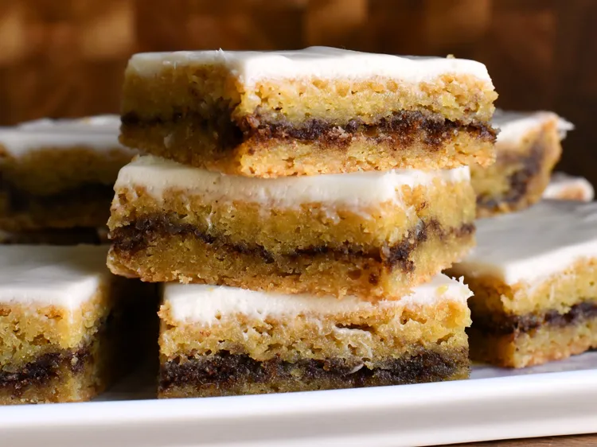

Return Home
Cinnamon Roll Blondies

Description
These blondies are everything you love about cinnamon rolls in an easy to make chewy cookie bar form.
Ingredients
Filling>
- 1/4 cup light brown sugar
- 1 Tbsp ground cinnamon
Blondies
- 1.2 cup unsalted butter, melted and cooled slightly
- 3/4 cup white sugar
- 1/4 cup light brown sugar
- 2 tsp vanilla extract
- 3/4 tsp kosher salt
- 1/4 tsp ground nutmeg
- 1 large egg, at room temperature
- 1 large egg yolk
- 1 cup all-purpose flour
- 1/4 tsp baking soda
Glaze
- 1 ounce full fat cream cheese, at room temperature
- 7 Tbsp confectioner's sugar, or as needed
- 1/4 tsp vanilla extract
- 1 pinch salt
- 3 Tbsp heavy cream, or as needed
Steps
-
Preheat oven to 350 degrees F (175 degrees C). Line an 8x8-inch square pan with enough parchment
paper to have overhang on all sides.
-
For filling; In a small bowl, mix brown sugar and cinnamon together until thoroughly combined.
Set aside.
-
For blondies: Whisk melted butter, white sugar, brown sugar, vanilla, salt, and nutmeg until
thoroughly combined. Add in flour and baking soda and mix until just incorporated.
-
Spread half the batter into an even layer in the prepared pan (it will be a somewhat thin layer).
Sprinkle cinnamon-sugar mixture evenly over the batter. Place dollops or remaining batter over the.
cinnamon-sugar layer, and carefully spread into an even layer to cover cinnamon-sugar completely.
-
Bake in preheated oven until bars begin to pull away from sides of the pan, are puffed in the
middle, and golden brown on top (25 to 30 minutes). Allow bars to cool completely in the pan.
-
For glaze: Beat cream cheese, powdered sugar, vanilla, and salt together with an electric mixer
until completely smooth. Add in heavy cream and beat until smooth. If glaze is too thick, add more
heavy cream a small amount at a time; if glaze is too thin, add more powdered sugar until desired
consistency is reached.
-
Pour glaze onto cooled bars and spread into an even layer. Cut into 16 bars.
Source: allrecipes